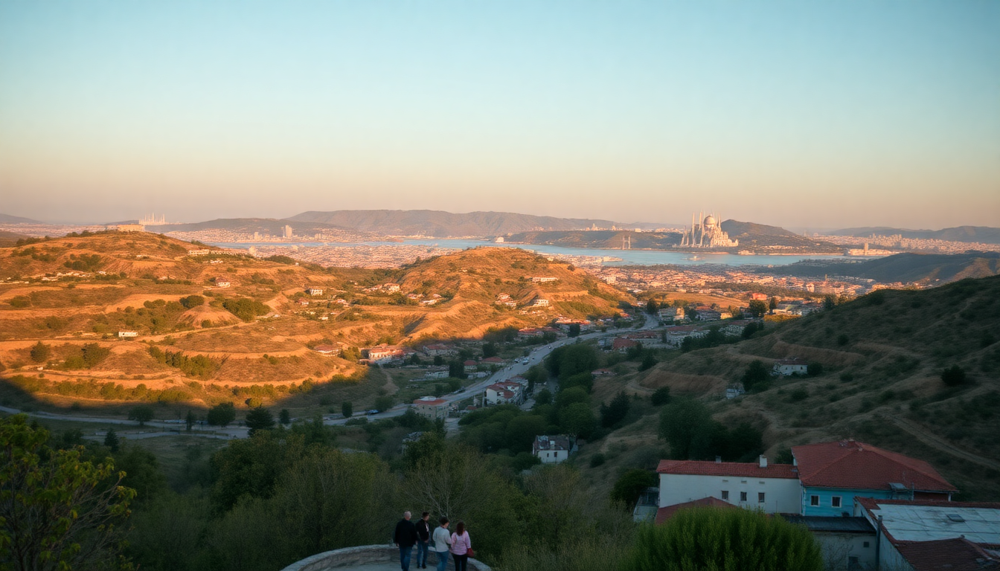

Best Time to Visit Turkey: Month-by-Month Guide for 2025

I’ve been to Turkey four times now, and every trip taught me that timing is everything. You don’t want to be hiking through the fairy chimneys of Cappadocia in a July heatwave, nor shivering on a Bosphorus ferry in January. This guide breaks down each month for 2025—weather, crowds, and what’s actually worth doing in Istanbul, Cappadocia, Antalya, and Pamukkale. No fluff, just what I’d tell a friend.
What’s the weather like in Turkey month by month in 2025?
Turkey’s climate varies wildly. Istanbul gets chilly winters and humid summers; Antalya stays warm year-round; Cappadocia sees snow. Here’s the raw data from my trips.
January – Cold and quiet. Istanbul averages 5–10°C (41–50°F), with rain and occasional snow. Cappadocia dips below freezing at night. Antalya is milder at 10–15°C (50–59°F), but beaches are empty. Pamukkale’s travertines can be icy—skip the morning walk.
February – Similar to January, but slightly warmer. I once did a sunrise hot air balloon ride in Cappadocia on a crisp February morning—only four other balloons in the sky, so views over Göreme were blissfully uncrowded. Istanbul’s Grand Bazaar is a good escape from the drizzle.
March – Spring starts late. Istanbul hits 12°C (54°F), and rain persists. Antalya warms to 18°C (64°F), but sea swimming is still a no-go. Pamukkale’s pools begin to fill after winter runoff—worth a visit if you’re okay with cool water.
April – Sweet spot for Istanbul and Cappadocia. Istanbul’s tulips bloom at Emirgan Park—I wandered through a sea of red and yellow in mid-April. Cappadocia’s valleys (like Rose Valley) are green and empty. Antalya hits 22°C (72°F), perfect for lounging at Konyaaltı Beach without the summer crowds.
May – My favorite month. Istanbul is 20°C (68°F) with long daylight. I ate lunch at Çiya Sofrası in Kadıköy and sat outside without sweating. Cappadocia’s hiking trails are ideal—try the Pigeon Valley loop. Antalya starts to get busy, but you can still snag a table at 7 Mehmet without a reservation.
June – Summer kicks in. Istanbul hits 28°C (82°F) and humidity rises. Antalya is scorching at 32°C (90°F)—stick to the water or air-conditioned spots like Hadrian’s Gate. Pamukkale’s travertines are packed by 10 AM; go at 7 AM.
July – Peak heat and crowds. Istanbul’s Sultanahmet district is a mob scene—I waited 45 minutes for a döner at Tarihi Sultanahmet Köftecisi. Antalya’s beaches (Lara Beach, Konyaaltı) are shoulder-to-shoulder. Cappadocia’s valleys are oven-like; skip midday hikes.
August – Same as July, but hotter. Antalya hits 35°C (95°F). I made the mistake of climbing to Pamukkale’s top at noon—don’t. Instead, book an early morning tour from Denizli. Istanbul’s ferry to the Princes’ Islands offers a breeze, but Büyükada gets packed.
September – Best month for Antalya. 30°C (86°F) but less humid. I swam at Olympos Beach without elbowing tourists. Istanbul cools to 25°C (77°F)—perfect for a Galata Tower visit. Cappadocia’s harvest season means fresh grapes at local wineries like Turasan.
October – Shoulder season gold. Istanbul’s 20°C (68°F) and fewer crowds—I walked the Basilica Cistern line-free. Cappadocia’s autumn colors in Ihlara Valley are stunning. Pamukkale is pleasant but the pools are cooler; bring water shoes.
November – Rain and chill. Istanbul drops to 15°C (59°F). Antalya stays at 20°C (68°F), but many beachside restaurants close. I had a cozy dinner at Nusr-Et Steakhouse in Etiler—overpriced but entertaining. Cappadocia’s hot air balloons fly less due to wind.
December – Cold and festive. Istanbul’s Grand Bazaar is quieter, and you can find deals at hotels like Hotel Amira in Sultanahmet. Cappadocia gets snow—I did a cave stay at Museum Hotel and watched flakes fall over Uçhisar Castle. Antalya’s Christmas markets are small but charming.
When is the best time to visit Istanbul for good weather and fewer crowds?
April through June, and September through October. Istanbul’s spring (April–May) gives you tulips at Emirgan Park and mild temps for walking from Taksim Square to the Galata Bridge. Fall (September–October) offers similar weather without the summer sweat. Avoid July and August unless you love queuing at Hagia Sophia in 30°C heat.
- April – Tulip Festival at Emirgan Park, fewer tourists.
- May – Outdoor dining at Çiya Sofrası in Kadıköy.
- September – Ferry ride to Üsküdar for sunset at Çamlıca Hill.
- October – Basilica Cistern and Topkapi Palace without lines.
When is the best time to visit Cappadocia for hot air balloons and hiking?
May and September. Balloons fly most reliably in spring and fall—wind is the enemy, not rain. I did a May flight with Butterfly Balloons and had clear views over Göreme’s fairy chimneys. Hiking is best in these months; summer is too hot for the Red Valley loop.
- May – Green valleys, balloon flights at dawn.
- September – Grape harvest, cooler hikes in Ihlara Valley.
- October – Autumn colors at Love Valley—bring a jacket.
When is the best time to visit Antalya for beach weather?
June and September. July and August are too hot (35°C+), and many hotels like Rixos Downtown are overpriced. June hits 30°C with manageable crowds—I spent afternoons at Konyaaltı Beach and evenings at the old town (Kaleiçi). September is similar but cheaper.
- June – Perfect swimming at Lara Beach.
- September – Olympos Beach and the Chimera flames hike.
- Avoid – August unless you book a cabana at Mardan Palace.
When is the best time to visit Pamukkale without the crowds?
April and October. Pamukkale’s travertines are a tourist magnet—I learned the hard way. In April, you can walk the white terraces at 8 AM with only 20 other people. In October, the water is cooler but the crowds thin. Skip summer entirely.
- April – Cool water, empty pools.
- October – Golden light for photos at Hierapolis.
- Tip – Stay at Pamukkale White Hotel for early entry.
What are the worst months to visit Turkey?
July and August for heat and crowds. I’ve done Istanbul in August—never again. Antalya’s beaches feel like a sardine can. Cappadocia’s valleys are too hot for hiking. December can be dreary in Istanbul, but it’s fine if you want cheap flights and empty museums.
- July – Sultanahmet packed, Antalya 35°C.
- August – Pamukkale queues, Cappadocia midday heat.
- December – Istanbul rain, but good hotel deals at Sirkeci Mansion.
FAQ
Is Turkey safe to visit in 2025? Yes, generally. I’ve traveled solo as a woman and felt safe in tourist areas like Sultanahmet, Göreme, and Kaleiçi. Avoid border regions near Syria and Iraq. Stick to main cities and book tours through reputable operators like GetYourGuide for Cappadocia balloon rides or Ephesus day trips.
Do I need a visa for Turkey in 2025? Most nationalities (US, UK, EU) need an e-Visa—apply online at the official Turkish government site. It costs about $50 and takes 10 minutes. Print it or save the PDF. I’ve used it at Istanbul Airport (IST) without issues.
What should I pack for Turkey month by month? For April–May: layers, a light jacket, and comfortable walking shoes (I wore my Salomons in Istanbul’s cobblestone streets). June–September: shorts, sunscreen, and a hat for Antalya. October–March: a warm coat for Istanbul and Cappadocia, plus waterproof boots for Pamukkale’s slippery travertines.
Conclusion
- Best overall months: April, May, September, October—mild weather and thin crowds across Istanbul, Cappadocia, Antalya, and Pamukkale.
- For hot air balloons: May or September in Cappadocia—book with Butterfly Balloons.
- For beach time: June or September in Antalya—skip July and August.
- For budget travelers: November through March—low prices at Hotel Amira in Istanbul and Museum Hotel in Cappadocia.
- Avoid: July and August unless you thrive in heat and queues.